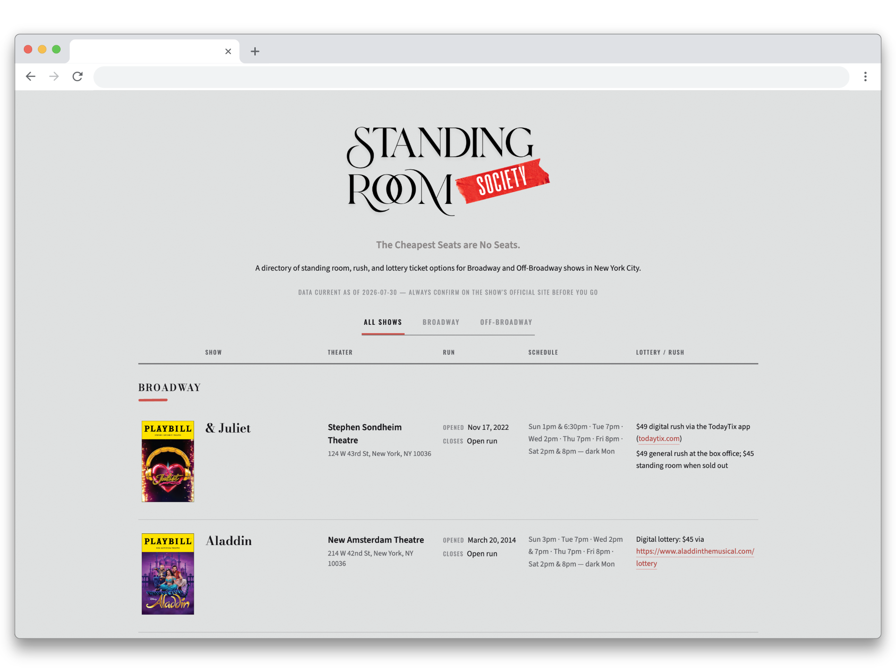

Standing Room Society
A cheap-seats directory for Broadway's most resourceful patrons
Cheap Seats. No Seats.
Every Broadway production manages its own rush, lottery, and standing-room ticket policies. However, these details are frequently scattered across pinned social media posts, venue FAQ pages, and third-party lottery applications. Standing Room Society consolidates this information into a single, standardized directory, providing real-time visibility into same-day ticket options for active productions.
What it does
- Nightly updates: Scheduled nightly scripts monitor active production policies to ensure listings remain accurate and closed productions are promptly removed.
- Consolidated Show Directory: Every open show at a glance, with poster art, price, and policy type surfaced up front instead of buried in FAQ pages.
- Fast & lightweight: Show artwork is cached locally to keep the grid loading instantly without hammering source servers.
- Cross-Device Compatability: Features a responsive layout designed to transition seamlessly from desktop displays to single-column mobile viewports.
Technical Highlights
Built as a static site with a Node.js scraper using Cheerio to parse Playbill listings for ticket policy data. A nightly GitHub Actions workflow runs the scrape, regenerates the site, and redeploys automatically so the directory stays current. Hosted on Vercel for instant, cache-friendly delivery.

Why I built it
I built Standing Room Society to solve the fragmented experience of tracking Broadway ticket distributions across disparate platforms, SRS provides theatergoers with a single, reliable point of access for same-day ticket info and policies.
Check it out